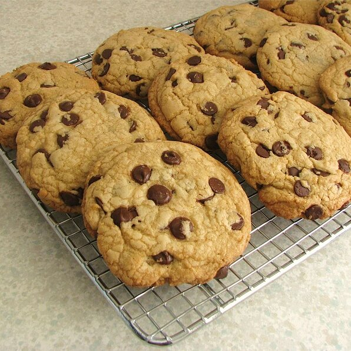

The best Chocolate Chip Cookies!

These cookies are the pinnacle of perfection! If you want a big, chewy cookie like
you see at the bakeries and specialty shops, then these are the cookies for you!
Details:
Prep: 10 mins
Cook: 15 mins
Additional: 15 mins
Total: 40 mins
Servings: 18
Equipment:
- One large sized baking sheet
- Parchment paper (or your choice of cooking oil spray)
- One medium sized mixing bowl
- One small sized mixing bowl
Ingredients:
- 2 cups all-purpose flour
- 1/2 teaspoon of baking soda
- 1/2 teaspoon of salt
- 3/4 cup of unsalted butter, melted
- 1 cup of packed brown sugar
- 1/2 cup of white sugar
- 1 tablespoon of vanilla extract
- 1 egg
- 1 egg yolk
- 2 cups of semisweet chocolate chips
Directions:
- Preheat the oven to 325 degrees fahrenheit
- Grease cookie sheets or line with parchment paper
- In a small bowl, sift together the flour, baking soda and salt; set aside
- In a medium bowl, cream together the melted butter, brown sugar, and white sugar
until well blended.
Beat in the vanilla, egg, and egg yolk until lightly creamy. Mix in
the sifted ingredients from the previous step until blended.
Stir in the chocolate chips using a wooden spoon.
Scoop out cookie dough using a spoon and roll the dough to preferred size.
Place the rolled cookie dough on to the baking sheet no less than 3 inches apart.
- Bake for 15-17 minutes, or until edges are lightly toasted.
- Let baked cookies cool before eating.
Main Page
Back